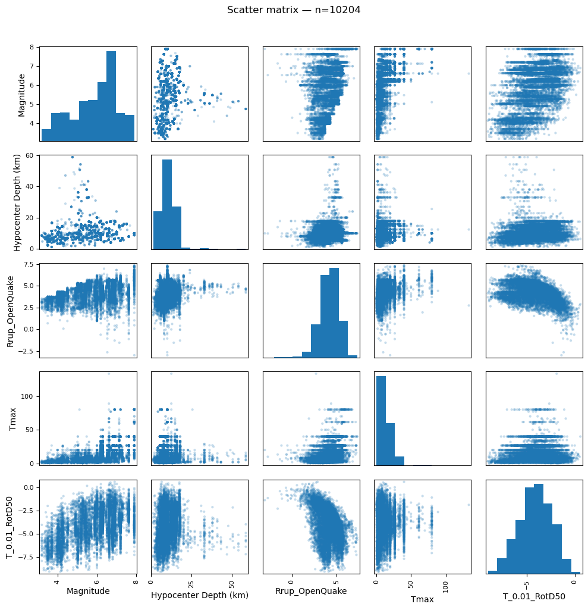

Análisis exploratorio de datos - Espectro de respuesta (Ing. Sísmica)#
import numpy as np
import pandas as pd
import matplotlib.pyplot as plt
df = pd.read_csv(r'C:\Users\elias\OneDrive\Desktop\dataviz_py\eda-jbook\docs\NGACOL.csv')
Análisis multivariado#
Matriz de correlación (Spearman)#
Se usa el coeficiente de Spearman ya que como se concluyó y probó anteriormente, ninguna de las variables sigue una distribución normal.
num_cols = [
"Hypocenter Depth (km)", "Magnitude", "Rrup_OpenQuake", "Tmax",
"Seismic Latitude", "Seismic Longitude",
"Station Latitude", "Station Longitude",
"T_0.01_RotD50"
]
d = df[num_cols].copy()
for c in num_cols:
d[c] = pd.to_numeric(d[c], errors="coerce")
d = d.dropna()
corr = d.corr(method="spearman")
plt.figure(figsize=(10, 8), dpi=120)
plt.imshow(corr.values, aspect="auto")
plt.colorbar(label="Correlación (Spearman)")
plt.xticks(range(len(num_cols)), num_cols, rotation=45, ha="right")
plt.yticks(range(len(num_cols)), num_cols)
plt.title(f"Heatmap de correlación (Spearman) — n={len(d)}")
plt.tight_layout()
plt.show()

corr
| Hypocenter Depth (km) | Magnitude | Rrup_OpenQuake | Tmax | Seismic Latitude | Seismic Longitude | Station Latitude | Station Longitude | T_0.01_RotD50 | |
|---|---|---|---|---|---|---|---|---|---|
| Hypocenter Depth (km) | 1.000000 | 0.033411 | 0.082140 | -0.005012 | -0.258708 | 0.114885 | -0.267013 | 0.122272 | 0.156363 |
| Magnitude | 0.033411 | 1.000000 | 0.450724 | 0.722550 | -0.178591 | 0.625156 | -0.178466 | 0.619650 | 0.412468 |
| Rrup_OpenQuake | 0.082140 | 0.450724 | 1.000000 | 0.467714 | -0.179214 | 0.451589 | -0.182411 | 0.423086 | -0.420402 |
| Tmax | -0.005012 | 0.722550 | 0.467714 | 1.000000 | -0.180257 | 0.596377 | -0.184205 | 0.584582 | 0.170410 |
| Seismic Latitude | -0.258708 | -0.178591 | -0.179214 | -0.180257 | 1.000000 | -0.273195 | 0.947388 | -0.265437 | -0.161578 |
| Seismic Longitude | 0.114885 | 0.625156 | 0.451589 | 0.596377 | -0.273195 | 1.000000 | -0.329726 | 0.985395 | 0.217293 |
| Station Latitude | -0.267013 | -0.178466 | -0.182411 | -0.184205 | 0.947388 | -0.329726 | 1.000000 | -0.324354 | -0.162873 |
| Station Longitude | 0.122272 | 0.619650 | 0.423086 | 0.584582 | -0.265437 | 0.985395 | -0.324354 | 1.000000 | 0.224352 |
| T_0.01_RotD50 | 0.156363 | 0.412468 | -0.420402 | 0.170410 | -0.161578 | 0.217293 | -0.162873 | 0.224352 | 1.000000 |
Se puede evidenciar como la magnitud y la distancia de ruptura están medianamente ccorrelacionadas con la variable respuesta, mientras que el resto de variables están muy bajas en terminos de correlación. Por otra parte, las coordenadas de estaciones y eventos sismicos tienen una correlación bastante alta
Matriz multivariada de distribuciones usando ln(Rrup_Openquake) y ln(T_0.01_RotD50)#
from pandas.plotting import scatter_matrix
cols = ["Magnitude", "Hypocenter Depth (km)", "Rrup_OpenQuake", "Tmax", "T_0.01_RotD50"]
d = df[cols].copy()
for c in cols:
d[c] = pd.to_numeric(d[c], errors="coerce")
d = d.dropna()
axes = scatter_matrix(d, figsize=(10, 10), diagonal="hist", alpha=0.25)
plt.suptitle(f"Scatter matrix — n={len(d)}", y=1.02)
plt.tight_layout()
plt.show()

Scatterplot 3D de las variables “Rrup_OpenQuake”, “Magnitude” y “T_0.01_RotD50” usando diferenciación de color por Hypocenter Depth (km)#
import plotly.express as px
cols = ["Rrup_OpenQuake", "Magnitude", "T_0.01_RotD50", "Hypocenter Depth (km)"]
d = df[cols].copy()
for c in cols:
d[c] = pd.to_numeric(d[c], errors="coerce")
d = d.dropna()
fig = px.scatter_3d(
d,
x="Rrup_OpenQuake",
y="Magnitude",
z="T_0.01_RotD50",
color="Hypocenter Depth (km)",
title=f"3D: T_0.01_RotD50 vs (Rrup, Magnitude) — color=Depth — n={len(d)}"
)
fig.update_traces(marker=dict(size=2, opacity=0.6))
fig.update_layout(height=650)
fig.show()
Se puede evidenciar que en particular, aquellos eventos sísmicos corticales mas profundos están entre magnitudes 4 y 6 con un ln(T_0.01_RotD50) entre -8 y -4 lo que indica que son sismos que no tuvieron una gran aceleración.
cols = ["Soil_Class", "Magnitude", "T_0.01_RotD50"]
d = df[cols].copy()
d["Soil_Class"] = d["Soil_Class"].astype("string").fillna("NA")
d["Magnitude"] = pd.to_numeric(d["Magnitude"], errors="coerce")
d["T_0.01_RotD50"] = pd.to_numeric(d["T_0.01_RotD50"], errors="coerce")
d = d.dropna(subset=["Magnitude", "T_0.01_RotD50"])
# bins simples de magnitud
bins = [d["Magnitude"].min(), 4, 5, 6, d["Magnitude"].max()]
labels = ["low", "4–5", "5–6", "high"]
d["Mag_group"] = pd.cut(d["Magnitude"], bins=bins, include_lowest=True, labels=labels)
groups = [g for g in labels if g in d["Mag_group"].astype("string").unique()]
fig, axes = plt.subplots(1, len(groups), figsize=(4.8*len(groups), 4.8), dpi=120, sharey=True)
if len(groups) == 1:
axes = [axes]
for ax, g in zip(axes, groups):
dg = d[d["Mag_group"] == g]
# ordenar suelos por mediana
order = dg.groupby("Soil_Class")["T_0.01_RotD50"].median().sort_values().index.tolist()
data = [dg.loc[dg["Soil_Class"] == k, "T_0.01_RotD50"].values for k in order]
ax.boxplot(data, tick_labels=[str(k) for k in order], showfliers=True)
ax.set_title(f"Soil_Class | Mag={g}\n(n={len(dg)})")
ax.set_xlabel("Soil_Class")
ax.tick_params(axis="x", rotation=45)
ax.grid(True)
axes[0].set_ylabel("T_0.01_RotD50")
plt.tight_layout()
plt.show()

En estos boxplots se ve un patrón consistente. Al aumentar la magnitud, la mediana de T_0.01_RotD50 sube en todas las clases de suelo, y además la separación entre suelos se vuelve más clara en los rangos 5–6. En particular, para magnitudes medias–altas, las clases 2–5 tienden a presentar medianas más altas que la clase 1 (y en general mayor dispersión), lo cual sugiere un efecto de sitio sobre la respuesta que persiste incluso controlando por magnitud. En el grupo la comparación es menos robusta porque hay menos datos y algunas clases aparecen con muestras muy pequeñas.
cols = ["Seismic Latitude", "Seismic Longitude", "Magnitude", "T_0.01_RotD50"]
d = df[cols].copy()
for c in ["Seismic Latitude", "Seismic Longitude", "Magnitude", "T_0.01_RotD50"]:
if c == "T_0.01_RotD50":
d[c] = np.exp(pd.to_numeric(d[c], errors="coerce"))
else:
d[c] = pd.to_numeric(d[c], errors="coerce")
d = d.dropna()
fig = px.scatter_geo(
d,
lat="Seismic Latitude",
lon="Seismic Longitude",
color="Magnitude",
size="T_0.01_RotD50",
projection="natural earth",
title=f"Eventos: color=Magnitud, tamaño=T_0.01_RotD50 — n={len(d)}"
)
fig.update_traces(marker=dict(opacity=0.6))
fig.update_layout(height=600)
fig.show()